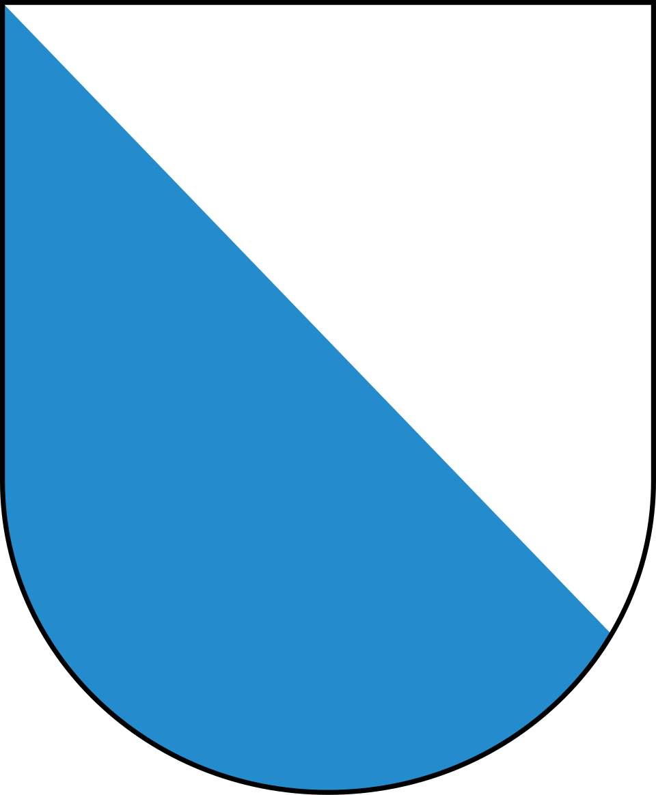

WrittenOfficial questions
Grundkenntnistest — Zurich's official catalogue
The official exam questions, unchanged. Every possible question is here. Question count and duration are estimates (not published).
Indicative number. The canton does not publish the official number of questions.
Estimated duration. The exact time is not published by the canton.
Indicative threshold. The canton does not publish the official passing threshold.
Real exam — How the test works
Real exam: questions drawn from this pool, on screen. These are the real official Grundkenntnistest questions — the actual draw also includes commune-specific questions absent from this pool.
The interview
In Zurich, knowledge is NOT tested orally: since the 2023 reform, municipalities may no longer check basic knowledge in an interview and must use the test instead. A naturalisation interview may still take place, but as an integration interview (among other things, protection of minors) — voluntary and increasingly rare.
Gespräche rückläufig: von 71 % (2022) auf 51 % (2025) der Gemeinden; Motivationsschreiben von 7 % auf 41 %.
What the test covers
| Topic | federal | cantonal | same topic, any level | Total |
|---|---|---|---|---|
| Democracy & Federalism | 3 | 3 | 4 | 10 |
| Social welfare & Civil society | 3 | 3 | 4 | 10 |
| History | 3 | 3 | 4 | 10 |
| Geography | 3 | 3 | 4 | 10 |
| Culture & Everyday life | 3 | 3 | 4 | 10 |
| Total | 15 | 15 | 20 | 50 |
What the app holds for this canton
Simulated written exam
160 communes in the canton
No commune matches.
Official source
« Für eine ordentliche Einbürgerung im Kanton Zürich braucht es Kenntnisse über die Schweiz, den Kanton Zürich und das Zürcher Gemeindewesen. »
www.zh.ch ↗